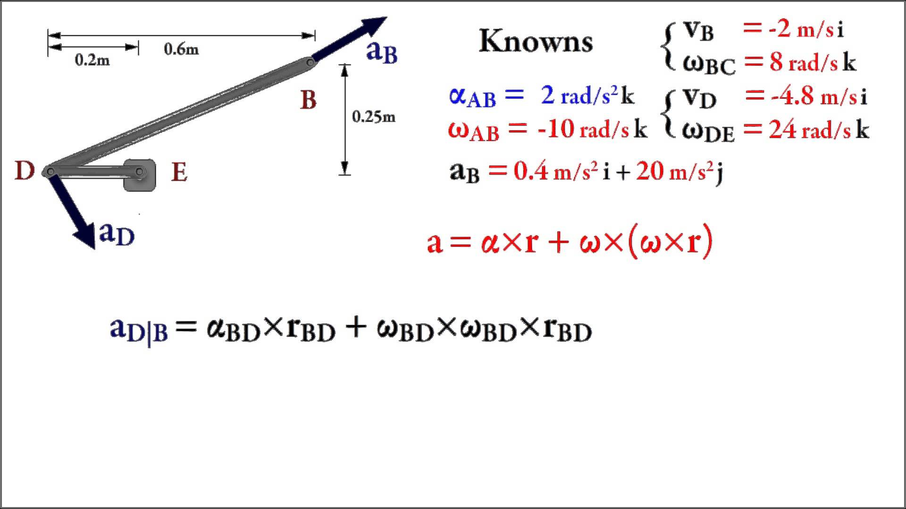
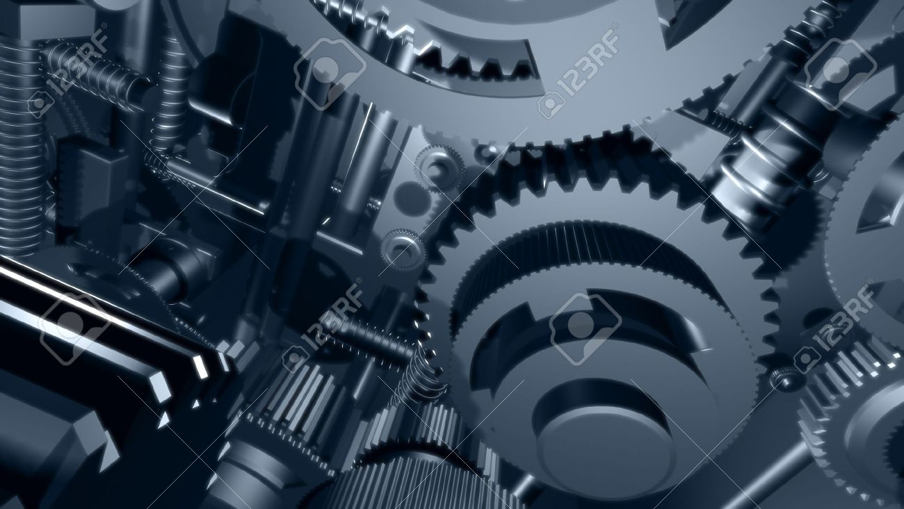
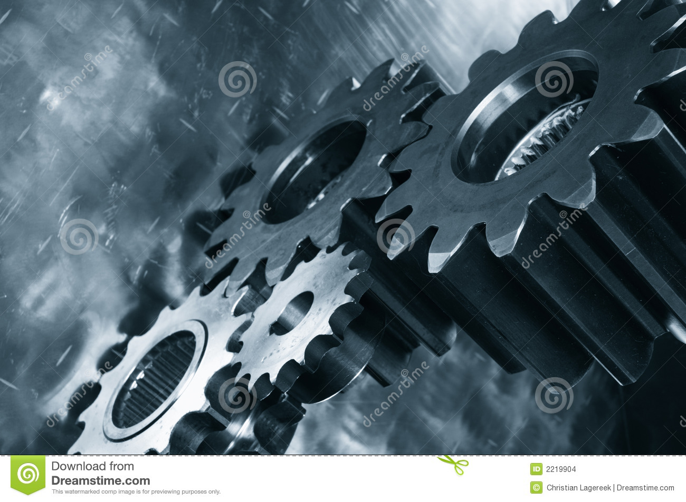
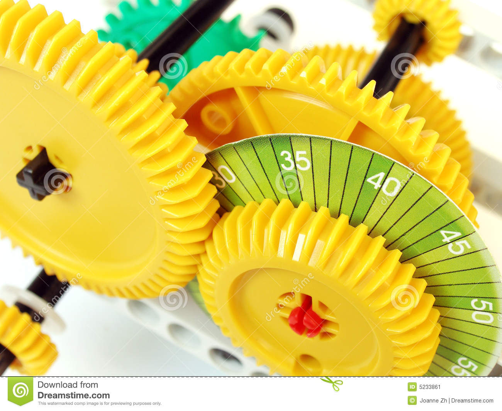
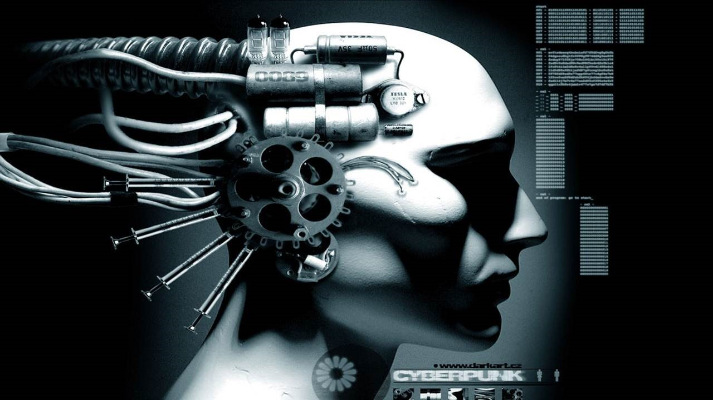

- pratical of theory of machine
- subject code-ME403

practical-1
Kinematic chain refers to an assembly of rigid bodies connected by joints that is the mathematical model for a mechanical system.[1] As in the familiar use of the word chain, the rigid bodies, or links, are constrained by their connections to other links.

practical-2
A four-bar linkage, also called a four-bar, is the simplest movable closed chain linkage. It consists of four bodies, called bars or links, connected in a loop by four joints. Generally, the joints are configured so the links move in parallel planes, and the assembly is called a planar four-bar linkage.[1]

practical-3
A gear is a rotating machine part which has cut teeth, that mesh with another toothed part in order to transmit torque. The cut teeth are also called 'cogs'. Gears are one of the most important parts of any machine or a mechanism. Some of the sectors in which gears play a vital role are:

practical-4
The gears in a transmission are analogous to the wheels in a crossed belt pulley system. An advantage of gears is that the teeth of a gear prevent slippage.When two gears mesh, if one gear is bigger than the other, a mechanical advantage is produced, with the rotational speeds, and the torques, of the two gears differing in proportion to their diameters.

practical-5
The system is comprised of infrared cameras mounted near the ceiling on the wall. These Cameras record detailed movement using reflective markers placed at specific anatomic sites on the body. The recorded-motion data is then combined with information on the individual’s height, weight, and body dimensions to graphically depict the movement. Movement direction, forces acting on the moving body, and the body’s responses to the forces is recorded using specialized software and data processing equipment.
